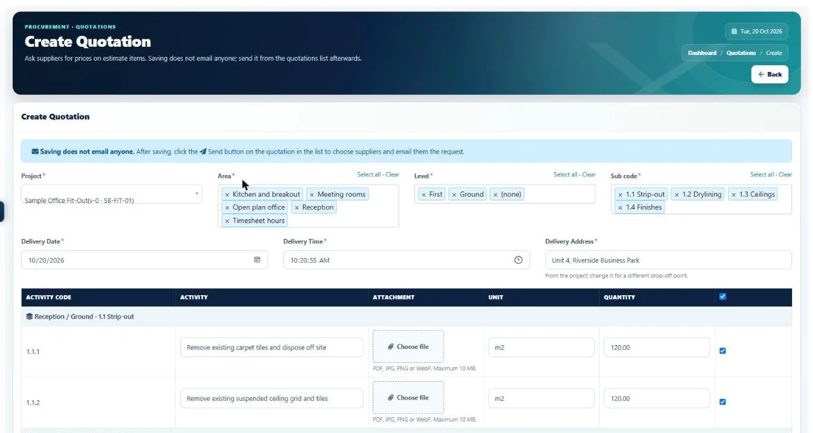

Construction supplier & procurement management
Construction supplier managementwithout the email chasing.
Ask several suppliers and subcontractors for prices at once, let them reply in a free portal, see every price side by side and order from the best, all from the items already in your estimate.

The problem
Quotes in inboxes,
compared by hand.
Buying is where a lot of margin is won or lost, yet most of it still happens in email, phone calls and spreadsheets.
Requests are typed out again from the estimate for every supplier.
Pick items by area, level and section and send one request to several suppliers.
Nobody remembers which supplier does what.
Each supplier has a "what they supply" note, and I-Cost suggests who to ask.
Prices come back in five different formats.
Suppliers price online, and the replies line up side by side with the lowest highlighted.
You chase replies by phone.
You get an alert when a supplier sends prices.
The order is retyped from the winning quote.
Order from the lowest quote in one click, at the quoted rates.
You can't see how your suppliers' own orders are going.
Suppliers can share their own order progress, so you see the supply chain behind your order.
In I-Cost
Every supplier,
every quote, one place.
Keep your supplier list with categories and what each supplies, invite them to the free portal, and send quotation requests straight from the estimate. Each supplier only ever sees their own requests and orders. Their prices line up side by side for you, and the best becomes an order in one click.
- Supplier list with what they supply
- Import your existing supplier list
- Suggested suppliers for each request
- Requests by area, level and section
- Free supplier portal
- Side-by-side price comparison
- Order from the lowest quote
- Supply chain view
Step by step
From estimate to order
in five steps.
Add your suppliers
Import your list or add them one by one, with what each supplies.
Send a request
Pick the estimate items and send one quotation request to several suppliers.
Suppliers reply
They price each item in the free portal, with carriage and notes.
Compare
See every reply side by side, with the lowest price on each item highlighted.
Order
Turn the best quote into a purchase order in one click.
Do suppliers have to pay for I-Cost?
No. Suppliers and subcontractors use the supplier portal free to receive requests, send prices, accept orders and record deliveries.
Can I manage subcontractors in I-Cost?
Yes. Subcontractors are added like suppliers: they receive your quotation requests and orders in the free portal and reply there. Your own site labour is tracked through timesheets.
Can suppliers see each other's prices?
No. Each supplier only sees their own requests and orders. Only your team sees the side-by-side comparison.
Can I import my existing supplier list?
Yes. You can import suppliers, and suppliers who already use I-Cost with another company can be added to your list.
How does I-Cost suggest suppliers?
It reads the items in your request and matches them against what each supplier supplies and what you have ordered from them before, then lists the most likely ones first. Your own knowledge only: it never shares your supplier list with anyone.
More of I-Cost
One platform for the whole job.
Everything below works together, from the same estimate. See the full platform.